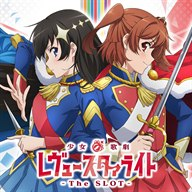

入力は自動保存されます。他のアプリを開いたり画面が消えたりして、ブラウザのタブが裏で破棄されても、次に開いたときに続きから再開できます。
保存先はその端末のブラウザの中だけです。サーバーには何も送られないので、別の端末とはデータを共有しません。シークレットモードや履歴の削除では消えます。
ホーム画面に追加すると、アプリのように全画面で起動できます。iPhone は共有ボタン →「ホーム画面に追加」、Android はメニュー →「ホーム画面に追加」。